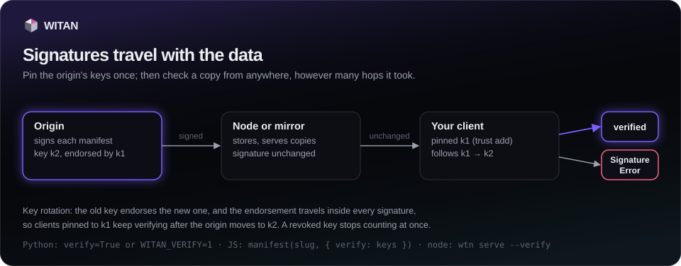

Trust and signatures¶
A WITAN origin signs every dataset version manifest it hands out. This page covers pinning an origin's keys, where the SDK checks signatures, how to require them, and what happens when the origin rotates or revokes a key. You need it when data reaches you through a node, a mirror or a bundle and you want proof that it is what the origin published.

What is signed¶
- The origin signs with Ed25519 and publishes its keys at
/.well-known/witan-keys. - The signature covers
{v: 1, origin, manifest}written as JSON with sorted keys. The manifest is the version as the origin published it: project, version, schema, parts (each withsha256,bytesandrecords) and totals. It leaves out part URLs and their expiry, the signature itself, and whatpullandloadadd locally (pulledAt,source,verifiedand so on). - The signature travels in the manifest as
signature:{origin, kid, alg, sig, chain}.kidis the first 16 hex characters of the SHA-256 of the public key. - Parts are named by their SHA-256 and every download and load checks it, so a verified manifest also vouches for the bytes. The nodes and mirrors in between need no trust.
Versions pulled with format="jsonl" go through data() and carry no manifest, so they are
not checked, even with verify=True. Versions written on a node's local projects are
unsigned.
Pin an origin¶
trust(*, force=False) fetches the keys of the origin the client points at and pins them.
The first contact pins what the server publishes (trust on first use). It returns
{origin, keys, added, refused, revoked, file, from}: origin is the origin the keys belong
to, from is the URL they were fetched from. If the two differ, the server at from is
speaking for another origin; pin only if you trust it to. trusted() returns every pinned
origin with its keys, and untrust(origin) removes one (it returns False if the origin was
not pinned).
wtn trust add warns on stderr when the keys came from a server that says it is a different
origin. wtn trust list shows how each key was pinned: a plain key id (first contact),
endorsed by <kid>, forced, or revoked.
Where signatures are checked¶
| Call | What is checked |
|---|---|
projects.pull |
The manifest from the server, before any part is fetched. A version already on disk is checked again offline when it is signed or verify=True. |
projects.pull_paid |
The bought manifest, before any part is fetched. |
projects.load, including check=True |
The bundle's manifest, before any part is kept. |
projects.query, projects.save |
Through pull. A bundle that save makes offline from disk is not checked again. |
projects.push_bundle, projects.promote |
Through load. |
wtn serve --follow |
Each new version of a followed project. A version that fails keeps the node on the previous one. |
The result is stored as verified in the local manifest: verified, unsigned (no
signature) or untrusted (signed by an origin you have not pinned). load returns it as
signature, with the signing origin in signedBy. wtn pull and wtn load add it to their
summary line. When a check fails, pull and load write nothing.
Require signatures¶
By default an unsigned manifest or one from an origin you have not pinned is accepted and
marked. These always raise SignatureError, required or not:
- a manifest from a pinned origin that does not match its signature;
- a signature made with a key the origin revoked;
- a signature made with a key you have not pinned and that no endorsement from a pinned key leads to.
To also refuse unsigned and untrusted manifests, pass verify=True (to pull, pull_paid or
load), use --verify (wtn pull, wtn load, wtn serve), or set WITAN_VERIFY=1
(true and yes also work) for every call in the process, including query and save.
verify=False turns the requirement off for one call even when WITAN_VERIFY is set.
Note
WITAN_VERIFY=1 also applies to the load inside push_bundle and promote. A node's
local projects are unsigned, so promote raises SignatureError while it is set. Run
promote with WITAN_VERIFY unset.
Key rotation and endorsements¶
When the origin re-keys, its old key signs an endorsement of the new one, and the endorsements
travel in every signature (chain). When a manifest is signed by a key you have not pinned,
the SDK follows the chain from a key you have pinned, verifies each link, and pins the new key
with endorsedBy set. This works offline, from a node or a bundle. An endorsement that does
not verify raises SignatureError.
Running trust() or wtn trust add again against a pinned origin adds only the keys a pinned
key endorsed. Keys that nothing pinned vouches for are listed in refused and not pinned.
If the origin really re-keyed without an endorsement, check the new key id with its operator,
then re-pin by hand with trust(force=True) or wtn trust add --force; those keys are marked
forced.
Revoked keys¶
The origin marks revoked keys in /.well-known/witan-keys. trust() marks them revoked in
your trust file and lists them in revoked; they stay in the file, marked. From then on a
manifest signed with a revoked key raises SignatureError, and endorsements made by a revoked
key are not followed. Revocations reach your machine only when you run trust() or
wtn trust add again.
SignatureError¶
SignatureError is a subclass of WitanError and is exported from witan_sdk. It is raised
for the cases above and for a malformed signature or endorsement. Its message names the
project, the version and, where it helps, the wtn trust add command to run.
from witan_sdk import SignatureError
try:
w.projects.load("latency-v12.witan", verify=True)
except SignatureError as err:
print("refused:", err)
Where pins are stored¶
Pinned keys live in one JSON file: $WITAN_TRUST_FILE, else
$XDG_CONFIG_HOME/witan/trust.json, else ~/.config/witan/trust.json. It holds
{"origins": {<origin>: [<key>, ...]}}, where each key has kid, alg, publicKey,
addedAt and, when they apply, endorsedBy, forced, revoked and revokedAt. The SDK
writes it atomically. See Nodes for following a mirror while trusting only the
origin, and the API reference for signatures.